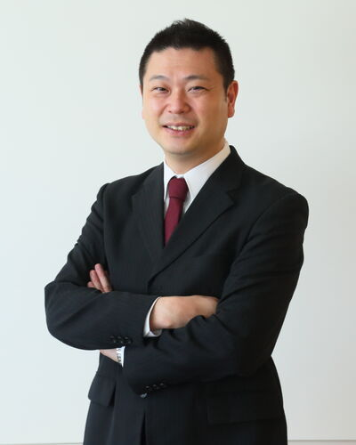
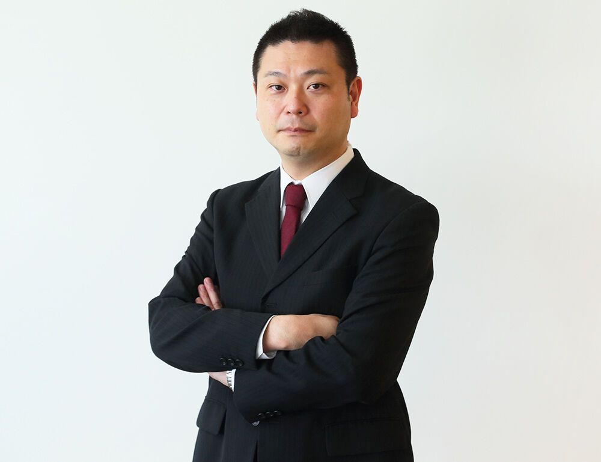

S t e p F o r w a r d
あなたの"志"実現を全力でサポート
「起業して、新たな価値を世の中に生み出したい！」
今このページをご覧になっているあなたも、そのような志を持ってこのページへ行き着いたことと思います。
宮城県仙台市を中心に活動する【税理士 成田章太郎事務所】では、「起業・創業を通じて新たな価値を創造しようとする方」に伴走し、信頼できるパートナーとしてあなたの志を実現するお手伝いをいたします。
その"志"実現のための支援を、私たちにまかせていただけませんか？
ぜひ、あなたの"志"を聞かせてください。
※起業・創業に関する相談につきましては、何度でも無料で受け付けております。お気軽にお問い合わせください。
無料相談予約・お問い合わせ「会計で世の中を明るくする」それが私の"志"です。
「経営者には、経理などの業務に煩わされること無く、本業に専念していただきたい」「そして、会社を成長させ、東北の発展に貢献する企業となってほしい」私は、自分自身の"志"を実現するするために、そう考えるようになりました。
2011年3月の東日本大震災を経験し、「東北の復興のためには地元の企業、特に、熱意とアイデアを持ったベンチャー・スタートアップ企業が育たなければならない」と強く感じました。しかし、税務会計の知識だけではベンチャー・スタートアップ企業の発展に寄与するには不十分だと考え、税理士登録後にグロービス経営大学院に入学し、経営に必要な知識や経験、そして豊富な人脈を得ることができました。今後はその知識や経験を、これから大きく成長しようとする経営者のために使っていきたいと考えております。

私は、税理士事務所を経営するとともに、仙台市の機関において、起業・創業を希望する方の相談を月に数十件受け付けている、いわば起業・創業に関するプロのコンサルタントを自負しております。
起業・創業をお考えの方が、どのようなことに悩み、不安に感じているのか、じっくりとお話しを聞きながら一緒に考える姿勢を特に大切にしております。
そして、あなたにとってどのような起業・創業の方法（個人事業、法人設立、NPO設立など）が最適なのかを考え、"志"の実現へ向けて伴走いたします。
特に、創業計画や、融資・補助金を獲得に繋がる事業計画の策定を得意としており、起業・創業期の資金に関する不安を解決するために尽力いたします。
経営者は常に孤独であり、不安と闘っているものです。
私自身も経営者として、顧問先企業の経営者と同じように悩み、迷いながら前に進んでおります。
顧問先企業の経営者の悩みを共有しながら、共に成長していくために、事業計画の策定や意思決定に役立つ会計情報を提供するための仕組み作りを得意としております。
ぜひ、企業の経営参謀・CFOとして、私を利用してください。
月次決算、事業計画策定、予実対比、月次会計ミーティングを通じて、御社の事業の成長に尽力します。当事務所では、顧問先企業に、税理士を企業の経営参謀・CFOとして利用してもらうことを重視しております。
主に、年商1,000万円までのフリーランス・個人事業主の方を対象としたプランです。レシートなどの経理関連書類をお預かりし、会計ソフトへの入力、試算表作成、確定申告を行います。青色申告の65万円控除により、税負担を抑えることができます。
会計業務、給与計算、株主総会の運営など、会社を運営していく上で必要な管理業務をアウトソーシングするプランです。「本業に専念しつつも、会計を経営判断に活用したい」とお考えの経営者におすすめです。主に創業後5年以内、従業員10名以内の会社を対象としています。
「会社が成長し、スタッフが増え、管理部門を自社内に置くことができるようになった。税理士にはより高度な相談をして、さらに会社を成長させるためのアドバイスがほしい」。こちらは、会社の成長期を迎え、管理機能の内製化と組織強化を図りたいと考えている経営者の方向けのプランです。
「社内の体制も整備され、会社も大きくなってきた」「財務に関するコンサルティングを中心に、経営全般について相談に乗ってくれる相手がほしい」「営業、人材、広告など、各方面の専門家を紹介してもらいたい」。そんな、財務政策を中心に経営全般のコンサルティングに興味がある経営者に向けたプランです。
起業・創業・会社設立をお考えのあなたへ。起業・創業に関する相談を無料で受け付けております。お気軽にご相談ください。
事業内容をお伺いし、あなたの"志"や、事業のアイディアをブラッシュアップするお手伝いをいたします。ZOOMにてオンラインでの面談も可能です。ぜひお気軽にご相談ください。
事業内容を実際に数値化し事業計画を策定いたします。ご自身の事業目標、銀行での資金の調達に使用する重要な書類になりますので一緒に納得いくまで突き詰めて参ります。
無事準備が整いましたらいよいよ起業・創業・会社設立、事業開始となります。もちろん事業開始後もあなたの志の実現のため、共に考え、伴走いたします。

あなたの"志"は何ですか？
「"志"とは、残りの人生をいかに生きるかを考えることである」私がグロービス経営大学院の授業の中で感銘を受けた言葉です。
私の"志"は、「会計の力で世の中を明るくすること」です。
私は、私の"志"の実現のため、あなたが成し遂げたいことに全力で伴走し、あなたの会社が世の中により大きな価値を提供できる会社に成長してくれることを願います。
あなたの"志"の実現のために、私にお手伝いをさせていただけませんか？
"志"を持ってご活躍されている顧問先企業の一部をご紹介します
「リロカリコクリ株式会社」は、宮城県加美町にて、"地域課題解決に関わるあらゆる事業を担える会社"を目指し活動しています。現在は空き家の維持管理やシェアオフィス運営を中心に、地域の社会問題解決に奔走されています。
（代表取締役：米津岳 氏）「株式会社ラフコネクト」は、宮城県大崎市に本社を置く絵本出版社です。"絵本がうみだす笑い（Laugh）を信じ、すべての人たちを繋ぐ（Connect）"をコンセプトにした新しい形の出版社です。
（代表取締役：後藤大志 氏 IMBA2016）「NPO法人あなたのいばしょ」は、話したくても話せない、頼りたくても頼れないといった"望まない孤独"を抱えている方が助けを求め、"望まない孤独"を解消することを目指して活動しています。
（代表理事：大空幸星 氏）「一般社団法人HitoReha」は、宮城県石巻市にて、"障がいを抱える方とその家族を誰も取り残さない地域を創る"というコンセプトの下に活動しております。
（代表理事：横山 翼 氏 GMBA2020仙台）2023年09月09日
私、税理士成田章太郎は、仙台市の起業支援センターである「アシ☆スタ」で定期的に起業相談を承っております。相談は無料となっております。お気軽にご利用ください。
2023年09月09日
当社ではマネーフォワード（会計ソフト）をお客様にお使いいただいております。このたび、マネーフォワード社からインタビューを受ける機会がありました。
2023年09月05日
【9月14日(木)開催：起業前後に知っておきたい！税務編】私、成田が相談員を務めている、仙台市の起業支援施設アシ☆スタにて、セミナーを開催します。
| 事務所名 | 株式会社willow consulting／税理士 成田章太郎事務所 |
|---|---|
| 住所 | 〒981-3135 宮城県仙台市泉区八乙女中央5-17-1 リヴィエル八乙女302 |
| 交通アクセス | 仙台市地下鉄・南北線「八乙女駅」より徒歩2分 ※ZOOMでのオンライン面談も行っております |
| 電話番号 | 022-208-8993 |
| 営業時間 | 9:00 〜 17:00 |
| 定休日 | 土、日、祝 |
仙台市地下鉄南北線「八乙女駅」から徒歩2分程度の場所です。お車でお越しの際は、八乙女駅前に大きな駐車場がございますので、そちらをご利用ください。
会社設立・起業をお考えの方へ。"志"を実現するためのパートナーとしてお声がけください。
起業・創業に関する相談につきましては、何度でも無料で受け付けております。
9:00 〜 17:00（土・日・祝 休み）
お問い合わせはこちら